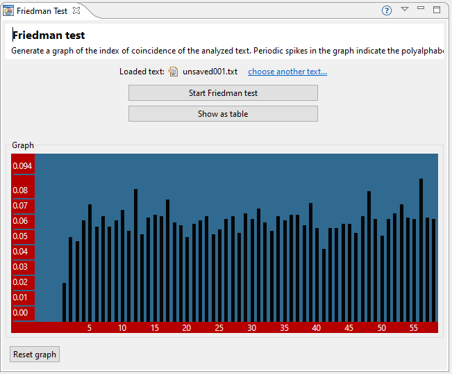

Der Friedman-Test ist eine Methode, um Vigenère-verschlüsselte Geheimtexte zu untersuchen. Der Ansatz besteht daraus, den Geheimtext gegen sich zu verschieben, und dann die Anzahl der übereinstimmungen von übereinanderstehenden Buchstaben zu zählen. Diese Zahl wird der Koinzidenzindex abhängig von der Verschiebung genannt, und der Friedman-Test erzeugt einen Graphen, der diese Koinzidenzindizes über den dazugehörigen Verschiebe-Längen aufträgt.
Der Graph kann mit der Maus verschoben, und per Rechts-/ Linksklick gezoomt werden.

Der Koinzidenzindex ist für Verschiebungen, die der Schlüssellänge oder ihrer Vielfachen entsprechen, größer als im Normalfall. Sie können deshalb im Graph Spitzen erkennen, die immer wieder im gleichen Abstand auftreten. Ihr Vorgehen ist es nun, die Periodenlänge der Spitzen zu erkennen, da diese der Schlüssellänge entspricht.
Das Ermitteln der Schlüssellänge ist oft der erste Schritt zur kompletten Entzifferung eines Vigenère-verschlüsselten Textes. Das Friedman-Plug-in ist im Vigenère Helper Plug-in integriert, was bedeutet, dass Ergebnisse zur Weiterverwendung in anderen Plug-ins dort gespeichert werden können. Der Button am unteren Rand des Formulars dient zur Speicherung der Schlüssellänge im Vigenère Helper.